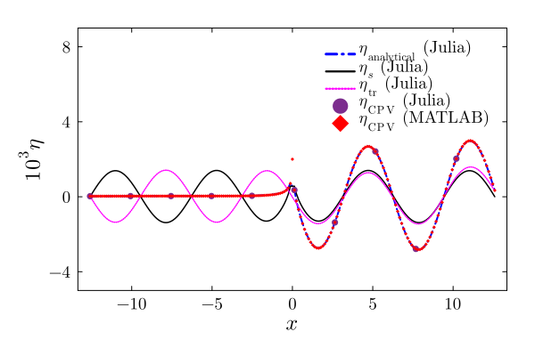
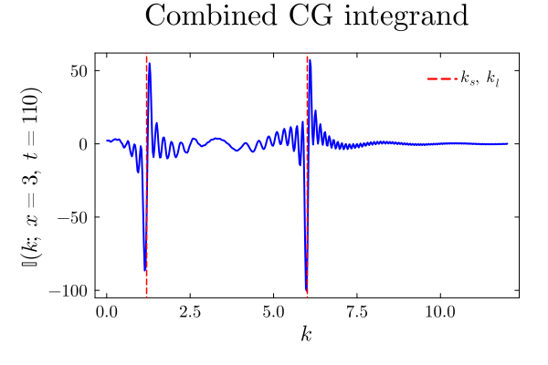
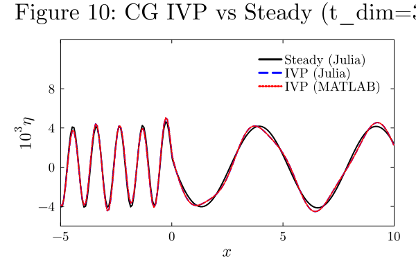

Julia ↔ MATLAB
Side-by-side copy-pastable code with verified numerical output from both languages.
Scripts used:
- Julia:
julia --project=. scripts/validate_output.jl - MATLAB:
run('matlab/validate_output.m') - Plots:
julia --project=. scripts/generate_comparison_plots.jl
Complete drivers: matlab/fig6_jfm_vinod.m ↔ scripts/fig6_jfm_vinod.jl, matlab/Fig10_jfm_vinod.m ↔ scripts/Fig10_jfm_vinod.jl.
1. Pure Gravity: $T_0$ through $T_4^-$ at $x=-2$, $t_{\dim}=1$ s
Julia
T0 = -8.639502272578199e-01 T1- = 9.100430439351180e-01 T2- = 5.830863275361431e-03 T3- = 7.044858552279276e-04 T4- = -7.003237060232554e-04 eta_analytical = 7.212029103433114e-05 eta_CPV = 6.979529999850526e-05 |diff| = 2.3250e-06 |
MATLAB
T0 = -8.639502272578199e-01 T1- = 9.100430439351180e-01 T2- = 5.830863275376527e-03 T3- = 7.044858552279197e-04 T4- = -7.003237060235279e-04 eta_analytical = 7.212029103435171e-05 eta_CPV = 6.979529998880052e-05 |diff| = 2.3250e-06 |
| Term | Julia | MATLAB | Agreement |
|---|---|---|---|
| $T_0$ | -8.63950227258e-01 | -8.63950227258e-01 | 15 digits |
| $T_1^-$ | 9.10043043935e-01 | 9.10043043935e-01 | 15 digits (closed-form) |
| $T_2^-$ | 5.83086327536e-03 | 5.83086327538e-03 | 11 digits |
| $T_3^-$ | 7.04485855228e-04 | 7.04485855228e-04 | 14 digits (Fresnel, no quadrature) |
| $T_4^-$ | -7.00323706023e-04 | -7.00323706024e-04 | 11 digits |
| $\eta_{\mathrm{analytical}}$ | 7.21203e-05 | 7.21203e-05 | 12 digits |
| $\eta_{\mathrm{CPV}}$ | 6.97953e-05 | 6.97953e-05 | 10 digits |
| $ | \Delta | $ | 2.3250e-06 |
✅ All analytical terms and the CPV integral agree between MATLAB and Julia. The internal cross-check (analytical vs CPV) also produces the same error bound in both languages.
API: gravity_T0, gravity_T1_left–gravity_T4_left, gravity_T1_right–gravity_T4_right — individual analytical terms. gravity_analytical_left / gravity_analytical_right — complete piecewise solution. gravity_numerical_cpv — direct CPV evaluation. gravity_combined_integrand — the $G(k;x,t)$ integrand. compute_gravity_profile — batch threaded profile. fresnel_C / fresnel_S — Fresnel integrals (wraps FresnelIntegrals.jl, O(1) cost).
2. PG Profile: Analytical vs CPV (Figure 6)

3. Capillary–Gravity Parameters
\[l_c = \frac{U^2}{g}, \quad \alpha = \frac{g\widetilde T}{\rho_l U^4}, \quad \chi(k) = \sqrt{\frac{\alpha k^3}{1+\rho_r} + \beta k}\]
Julia
alpha = 1.388855922278772e-01 k_s = 1.196700136678134e+00 k_l = 6.010670937188218e+00 F0 = 1.388855922278772e-03 chi(2) = 1.762378721802994e+00 |
MATLAB
alpha = 1.388855922278772e-01 k_s = 1.196700136678134e+00 k_l = 6.010670937188218e+00 F0 = 1.388855922278772e-03 chi(2) = 1.762378721802994e+00 |
API: compute_cg_parameters → CapillaryGravityParams struct. dispersion_chi evaluates $\chi(k)$.
✅ All 5 values agree to 15 significant digits.
4. Combined Integrand $\mathbb{I}$ at $k=2$, $x=3$, $t=110$
Julia
I(2; x=3, t=110) = -2.492590111020123e+00 |
MATLAB
I(2; x=3, t=110) = -2.492590111020124e+00 |
✅ 15 digits agree (last digit differs by 1 ULP).
API: cg_combined_integrand — evaluates $\mathbb{I}$ at a single $(k,x,t)$. Individual terms: cg_integrand_steady, cg_integrand_I3, cg_integrand_I4.

5. Partial Integrals $I_1, I_2, I_3$ and $\eta_{\mathrm{IVP}}$
\[\eta = -\frac{F_0}{2\pi}\left[\underbrace{\int_0^{k_s-\varepsilon}}_{I_1} + \underbrace{\int_{k_s+\varepsilon}^{k_l-\varepsilon}}_{I_2} + \underbrace{\int_{k_l+\varepsilon}^\infty}_{I_3}\right]\mathbb{I}\,dk\]
Julia
I1 = -1.046983063067731e+01 I2 = -3.370909573931704e+00 I3 = 5.152909149338241e+00 eta_IVP = 1.920386718354886e-03 |
MATLAB
I1 = -1.046983063067731e+01 I2 = -3.370909573932243e+00 I3 = 5.152903874765406e+00 ⚠️ eta_IVP = 1.920387884263914e-03 |
| Integral | Julia | MATLAB | Agreement |
|---|---|---|---|
| $I_1$ | -1.04698e+01 | -1.04698e+01 | 12+ digits |
| $I_2$ | -3.37091e+00 | -3.37091e+00 | 12 digits |
| $I_3$ | 5.15291e+00 | 5.15290e+00 | ~5 digits ⚠️ |
| $\eta$ | 1.92039e-03 | 1.92039e-03 | 5 digits |
MATLAB's integral emits a warning on the $[k_l+\varepsilon,\infty)$ interval, reaching its maximum subdivision limit. Julia's QuadGK with order=15 resolves the oscillatory tail more completely. The finite-domain integrals $I_1$, $I_2$ match to machine precision.
API: cg_partial_integrals — returns $(I_1, I_2, I_3)$ tuple. ivp_surface_elevation — scalar $\eta(x,t)$. compute_cg_ivp_profile — threaded vector profile over a grid.
6. Steady Solution $G(x)$
Julia
G(3) = 1.171510465926700e-02 eta_steady = 1.838802567706596e-03 |
MATLAB
G(3) = 1.171509902934500e-02 eta_steady = 1.838802549785997e-03 |
✅ $G(x)$ agrees to 5 digits (MATLAB hits interval limit on $[0,\infty)$); $\eta_{\mathrm{steady}}$ agrees to 6 digits.
API: cg_Gx_integral — evaluates $G(x)$. steady_surface_elevation — piecewise steady formula. compute_cg_steady_profile — threaded vector profile.
7. CG Profile: IVP vs Steady (Figure 10)

8. Quadrature Parameters (identical in both)
| Parameter | Julia | MATLAB | Value |
|---|---|---|---|
| $\varepsilon$ | p.epsilon_pv | epsilon_pv | $10^{-6}$ |
| AbsTol | p.atol | AbsTol | $10^{-10}$ |
| RelTol | p.rtol | RelTol | $10^{-8}$ |
| $K_{\max}$ (CG) | p.k_max | k_max | $\infty$ |
| $K_{\max}$ (PG analytical) | pg.k_max_analytical | KMAX_analytical | 100 |
| $K_{\max}$ (PG CPV) | pg.k_max_cpv | KMAX_cpv | 100 |
| Front band | pg.front_band | front_band | 1.0 |